P55
Proportional-Derivative Control
这是一种常用的控制器。
✅ 有反馈，但还是算是前向控制，因为反馈的部分和想控制的部分不完全一致。
这一页先用一个简化问题来分析PD控制
问题描述
Compute force \(f\) to move the object to the target height
✅ 例子：物体只能沿竿上下移动，且受到重力。
✅ 控制目的：设计控制器，使物体在控制力的作用下达到目标高度。
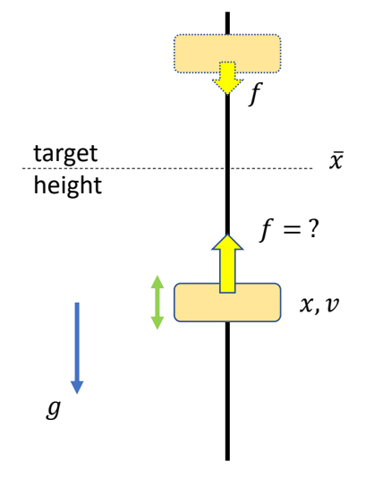
使用比例控制
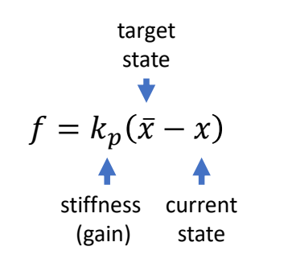
实际上：会产生上下振荡，不会停在目标位置。
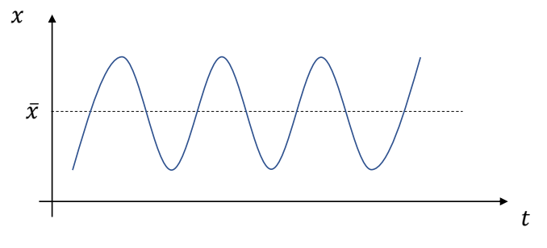
P56
比例控制+Damping
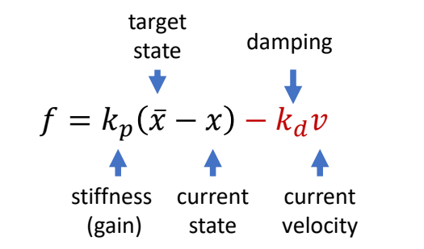
✅ 改进：如果物体已有同方向速度，则力加得小一点。
P57
比例微分控制
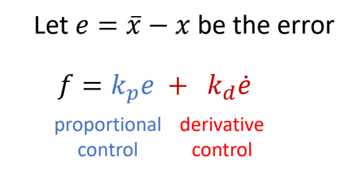
✅ 第一项：比例控制；第二项：微分控制
P59
✅ 存在的问题：为了抵抗重力，一定会存在这样的误差。
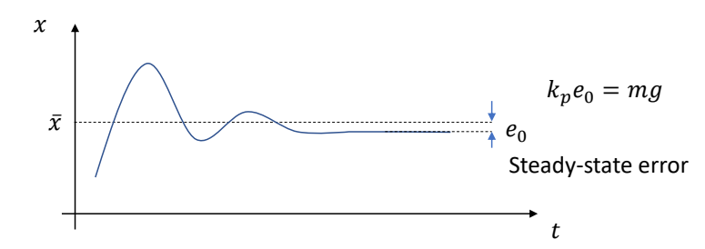
P60
Increase stiffness \(k_p\) reduces the steady-state error, but can make the system too stiff and numerically unstable
✅ 增加 \(k_p\) 可以减小误差，但会让人看起来很僵硬。
P61
比例积分微分控制 Proportional-Integral-Derivative controller
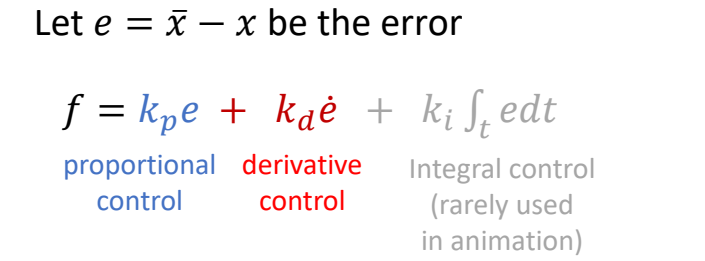
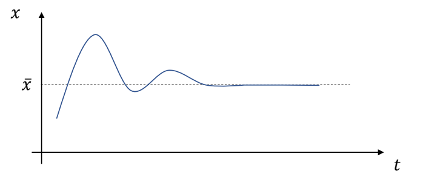
✅ 解决误差方法：积分项。
✅ 但角色动画通常不用积分项。
✅ 积分项跟历史相关，会带来实现的麻烦和控制的不稳定。
Stable PD Control
✅ PD control 的过程类似于一个弹簧系统。
✅ 因此利用弹簧系统中的半隐式欧拉来提升 PD 的稳定性。
显式欧拉的PD控制的稳定性分析
✅ \(h\) 为时间步长。
✅ (1) 假设 \(m＝1\) (2) 代入 \(f\) 到方程组 (3) 方程组写成矩阵形式，得：
P11
$$ \begin{bmatrix} v_{n+1}\\ x_{n+1} \end{bmatrix}=\begin{bmatrix} 1-k_dh & -k_ph\\ h(1-k_dh) & 1-k_ph^2 \end{bmatrix}\begin{bmatrix} v_n \\ x_n \end{bmatrix} $$
P14
提取常数方程A，得：
$$ A=\begin{bmatrix} 1-k_dh & -k_ph\\ h(1-k_dh) & 1-k_ph^2 \end{bmatrix} $$
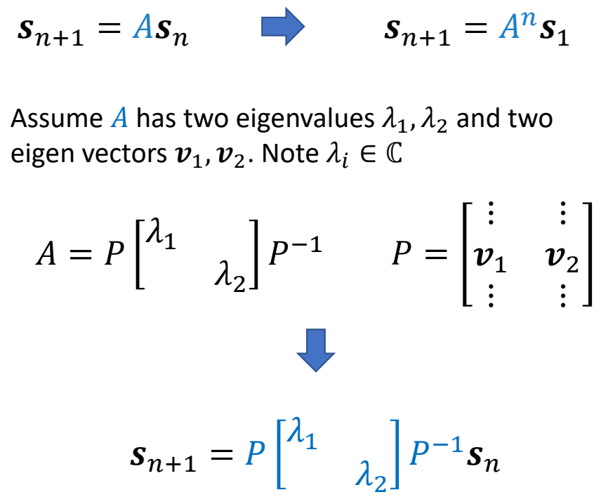
\(\lambda _1,\lambda _2 \in \mathbb{C} \) are eigenvalues of \(A\)
✅ 基于中间变是 \(z_n\) 推导的过程跳过。
✅ 根据矩阵特征值的性质可直接得出结论。
if \(|\lambda _1|> 1\)
The system is unstable!
Condition of stability: \(|\lambda _i|\le 1 \text{ for all } \lambda _i\)
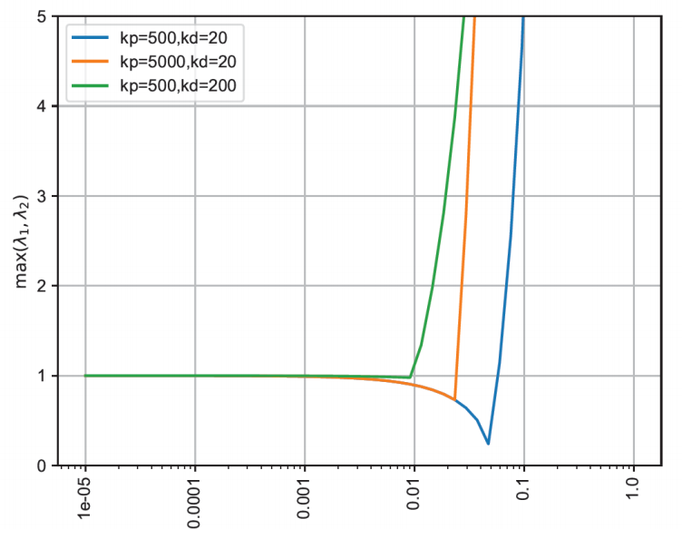
✅ 如果 \(k_p\) 和 \(k_d\) 变大，就必须以一个较小的时间步长进行仿真。
P22
隐式欧拉的PD控制
✅ 解决方法：半隐式欧拉 → 隐式欧拉，即用下一时刻的力计算下一时刻的速度。
- 半隐式欧拉
$$ \begin{align*} v_{n+1} & = v_n+h(-k_px_n-k_dv_n) \\ v_{n+1} & = x_n+hv_{n+1} \end{align*} $$
$$ \Downarrow $$
- 隐式欧拉
$$ \begin{align*} v_{n+1} & = v_n+h(-k_px_n-k_dv_{n+1}) \\ x_{n+1} & = x_n+hv_{n+1} \end{align*} $$
✅ 实际上，计算 \(f_{n＋1}\) 只使用 \(V_{n＋1}\) , 不使用 \(x_{n＋1}\) , 因为 \(x_{n＋1}\) 会引入非常复杂的计算。
✅ 由于 \(v_{n＋1}\) 未知，需通过解方程组来求解。
P23
得到的方程组为：
$$ \begin{bmatrix} v_{n+1} \\ x_{n+1} \end{bmatrix}=\frac{1}{1+hk_d} \begin{bmatrix} 1 & -k_ph\\ h & 1+k_dh-k_ph^2 \end{bmatrix}\begin{bmatrix} v_n\\ x_n \end{bmatrix} $$
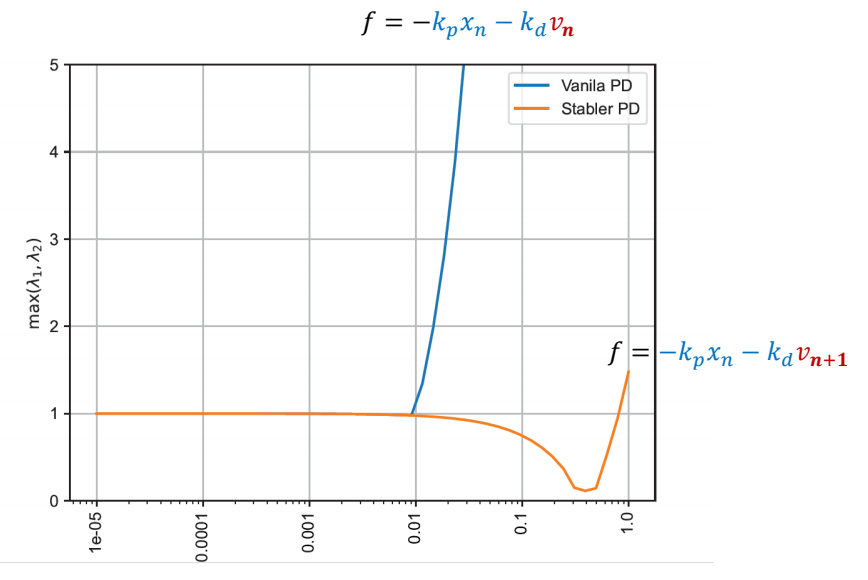
✅ \(v_{n}\) 换成 \(v_{n＋1}\) ，很大承度上提高了稳定性。
本文出自CaterpillarStudyGroup，转载请注明出处。
https://caterpillarstudygroup.github.io/GAMES105_mdbook/